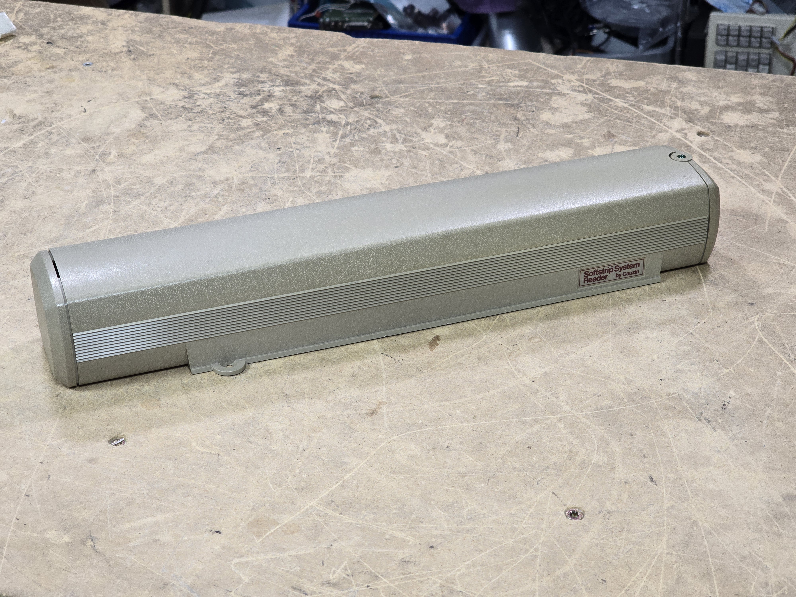
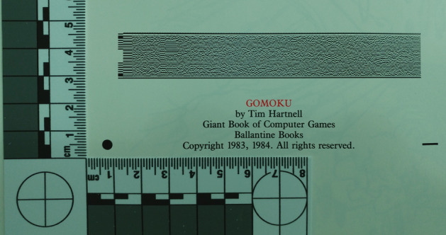
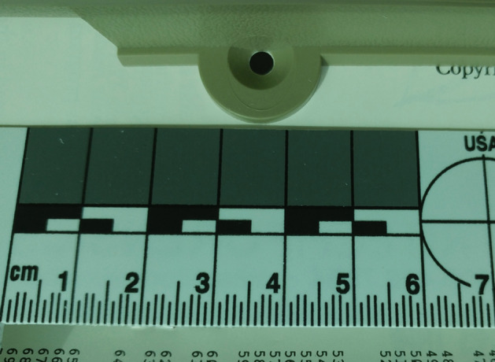
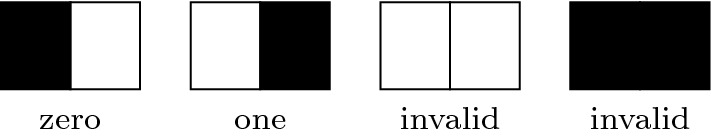

Cauzin Softstrip Reader
Before QR codes, this $200 wand turned magazine pages into computer data—one manual 30-second swipe at a time.

Overview
The Cauzin Softstrip system, introduced in 1985 by Cauzin Systems of Waterbury, Connecticut, was the world's first commercial two-dimensional barcode format. It consisted of an optical scanning peripheral (the 'Softstrip System Reader') that read densely printed 2D bar codes from paper, and companion encoding software nicknamed the 'Stripper.' A Softstrip was a narrow strip approximately 5/8 inch (16 mm) wide and up to 10 inches (254 mm) long, printed along the edge of a magazine page or book. A single strip could encode up to 5,500 bytes of data — program source code, executable binaries, text, or graphics.
The reader retailed for approximately $200 USD, and supported the Apple II, Macintosh, and IBM PC platforms. Softstrips appeared in computer magazines including Byte, Family Computing, II Computing, and InCider; they were sold in retail stores as 'StripWare' booklets; and they appeared in at least one book, Animated Algorithms (Barnett & Barnett, McGraw-Hill, 1986). The product won MacUser magazine's 'Most Innovative Concept of 1986' award but failed commercially within a few years. The format lived on, re-named Datastrip code, used in identification cards and biometric data encoding into the 2000s. The Cauzin Softstrip anticipated later 2D codes like QR by over a decade, but fell victim to a classic chicken-and-egg adoption dilemma and was outrun by the plummeting cost of floppy disks.
Deep dive
The Softstrip was co-founded by two figures from opposite ends of computing. Dr. Jack Goldman was the founder and first director of Xerox PARC — the legendary laboratory that birthed the laser printer, Ethernet, the GUI, object-oriented programming, and the personal computer. After leaving Xerox, Goldman co-founded Cauzin Systems. Bob Brass was a hands-on engineer who tackled the mechanical precision problem with a clever analog solution: a spiral gear driving a phonograph-like tracking arm that could achieve sub-degree positional accuracy without requiring mechanically impossible gear precision. The company was based in Waterbury, Connecticut and later changed its name to Softstrip, Inc. The development team included John Glaberson, Richard W. Mason, Scott Santulli, G. Thomas Roth, and others, all named as inventors on the core US patents (US 4,692,603, US 4,782,221, US 4,728,783).
The interaction was pure embodied ritual. The user obtained a magazine containing a Softstrip-encoded program, positioned the reader over the strip on the page using two alignment marks (a circle and a rectangle), initiated the scan, and waited approximately 30 seconds while the reader's motor drew the strip past an LED-illuminated linear photodiode array. An audible beep confirmed success or signaled an error (smeared ink, misalignment). The data transferred to the host computer, appearing as a file the user could save to disk or run. For multiple-strip publications, the user repeated the entire process, re-aligning for each strip. This was designed as a replacement for the era's dominant software distribution method: typing in BASIC listings character-by-character from magazine pages — an activity notorious for introducing transcription errors. The reader could even be used to transfer data between otherwise-incompatible platforms (Apple II to Mac to PC), since the strip format was platform-agnostic.
The fundamental encoding unit was the dibit — a pair of adjacent squares. A black-then-white dibit encoded a 0; white-then-black encoded a 1; black/black and white/white were invalid. This self-clocking scheme ensured every valid dibit contained a transition, providing inherent timing recovery and error detection. Each strip included a horizontal synchronization section (encoding nibbles per row and paper-ink contrast calibration), a vertical synchronization section (encoding dibit height with redundancy), and a data section with dual inline parity and a strip-level checksum. The encoding software ('Stripper,' under $30) calculated optimal strip layout accounting for an 'ink spread index' — an empirical measurement of how much printing ink bleeds on specific paper stock. For magazine-quality reproduction, strips were printed oversize on a dot matrix printer and photographically reduced at 8:1 ratios to achieve final dimensions. A complete digital decoder using convolutional neural networks was published by Michael Reimsbach and John Aycock in 2021, achieving over 91% decode rates across a corpus of 1,229 strips.
The reader cost $200 — roughly equivalent to a floppy disk drive, which offered vastly more capacity and faster access. Softstrips appeared in magazines from roughly 1985 to 1988, then publications stopped printing them. The product suffered from a classic chicken-and-egg problem (magazines wouldn't dedicate page space without an installed base; consumers wouldn't buy without a steady supply of strips), limited capacity (5.5 KB was fine for short BASIC listings but inadequate as programs grew), physical durability issues (magazine ink smearing, paper curl), and brutal timing: by 1987–88, modems and BBS systems offered a faster and more capacious alternative. Nevertheless, the format won the MacUser Editors' Choice Award for 'Most Innovative Concept of 1986' and was reborn as Datastrip code for ID cards and biometric data.
Team & pioneers
- Dr. Jack Goldman. Co-founder. Founder and first director of Xerox PARC. Provided vision and credibility to the venture.
- Robert L. 'Bob' Brass. Co-founder and lead inventor on all core patents. Solved the mechanical precision problem with a spiral-gear tracking arm.
- John Glaberson. Co-inventor on reader, data strip, and encoding patents. Later co-inventor of Datastrip card reader (US 4,886,957).
- Richard W. Mason. Co-inventor on core Softstrip patents.
- Scott Santulli. Co-inventor on core Softstrip patents; later co-inventor of Datastrip card reader.
- G. Thomas Roth. Co-inventor on core Softstrip patents.
- Peter D'Amato. Manager of OEM and VAR Support (1984–1988).
Media



Sources
- Reimsbach, Michael & Aycock, John. 'Decoding the Cauzin Softstrip: a case study in extracting information from old media.' Archival Science, 2021. PMC 8591774.
- Sandberg-Diment, Erik. 'Supermarket Bar Codes Are Applied to Software.' The New York Times, October 15, 1985.
- Wikipedia: Cauzin Softstrip
- US Patent 4,692,603: Optical reader for printed bit-encoded data (Brass, Glaberson, Mason, et al., 1987)
- ANTIC Interview 115 — Bob Brass and Peter D'Amato, Cauzin Softstrip (2016)
- Tebbutt, David. 'Cauzin's Softstrip.' Personal Computer World, January 1987.
- Cauzin Softstrip Archive — Internet Archive (promotional photos, packaging)
- Sowerbutts, Will. 'Solving the CauzCoin Retro BattleStations Challenge' (2016)
- Reimsbach, Michael. 'Reverse Engineering the Cauzin Softstrip.' Master's thesis, htw saar, 2018.